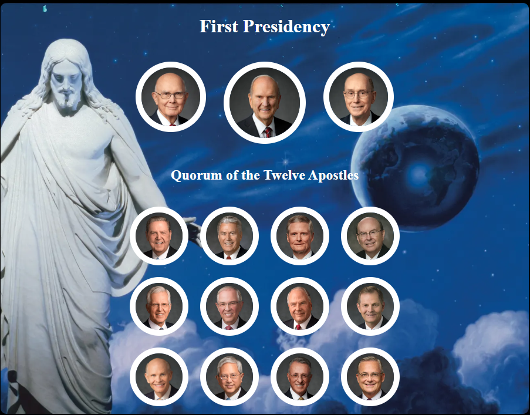

Apostle Spotlight
For this ICE challenge I created a grid of all the apostles
Favourite Devotional
For this ICE challenge I created a table of all my favourite devotionals
Jesus Wall
For this ICE challenge I learnt how to edit images and make them appropriate for a webpage, so it can function effeciently
Flags
For this ICE challenge I used CSS grid to create flags from different countries
Holiday Page
For this ICE challenge I used CSS to make a pre-built html page look very different
Positioning
For this ICE challenge I learnt about how to better position elements using CSS
Prophet Card
For this ICE challenge I created a card of President Nelson and made it look like and example
SignUp
For this ICE challenge I created a sign up link about the scriptures